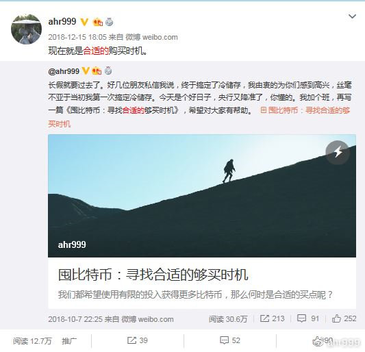
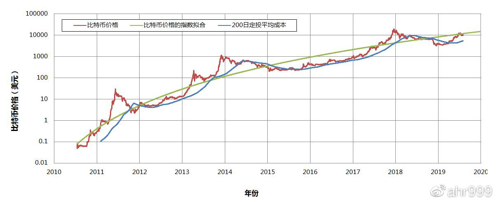
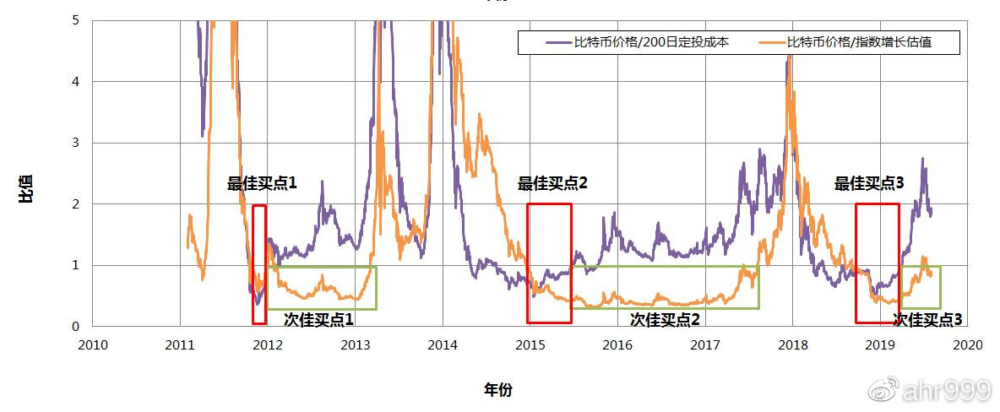

寻找合适的购买时机（20190804更新）
 ahr999
08-04 11:01
ahr999
08-04 11:01
阅读数：14万+
囤币党从来都不是无脑囤币，我们对比特币的行情有自己的判断，而且相当准确。
行情分析师对囤币党有个刻板的印象，仿佛这些人都是没有脑子的傻囤。但其实，并不是这样的，囤币党也是要分析行情的，因为只有这样，利用手上有限的资源，才能够囤更多的比特币。
简而言之，囤币党也是要抄底的。对（中长期）行情精准的判断，也是囤币党的必备技能。
先说点题外话。
前几天，有个哥们说，囤币党的收益并不高，因为如果从2013年顶部8000元人民币开始囤，到现在的收益也就不到10倍。
你们把囤币党想得也太笨了。仿佛囤币党对价格完全没有判断，不知道什么是高点，什么是低点，人傻运气也差，在高点无脑梭哈吗？
要知道囤币党之所以能成为囤币党，智商一定是不低的。至少比你想象的要高，甚至比绝大多数人都高。
我就是从2013年的顶部开始囤的，但是在上一轮熊市走下来，我的总成本是低于2000元人民币的。在这一轮熊市，我不仅写了文章，《囤比特币：寻找合适的够买时机》，而且在最合适的时机（图1），我也提醒过大家。
图1 提醒合适的购买时机
在《囤比特币：寻找合适的够买时机》，我已经把分析思路分享了。今天这篇文章的目的是，更新最新的数据，对上一篇文章的预测进行复盘，同时加入了我个人对现在形势的判断。
首先，我们看看最新的数据。
图2 比特币历史价格和200日定投平均成本
图3. 比特币价格/200日定投成本和比特币价格/指数增长估值
具体这些线都是什么含义，大家可以去读上一篇文章，这里我就不重复解释了。【更正上篇文章的一个错误，200日定投成本本质上是调和平均值，不是几何平均值。这个错误不影响文章的结论。】
先看图2，比特币的价格又回到了指数增长估值的附近。这意味着，现在的比特币价格，既没有低估，也没有高估，是个公平的价格。
但我们通常都不甘心，因为人人都希望自己能买到最低点，从而囤更多的比特币。
看图3，我们会发现比特币历史上一共出现了3次抄底机会，每次的间隔大约就是4年。这次抄底机会（2018年底-2019年初）刚刚过去了，如果我们还想抄底，就得等4年以后了。
但是，这次的底部是20000多人民币，是前一轮牛市顶点8000人民币的3倍。所以，下次的底部肯定也会高于之前的顶部——140000人民币。
显然，我们不能等到下一轮熊市再抄底，那个底部会比现在的所有价格都高。
图3中还标出了次佳买点，每一次最佳买点之后，都会出现一个较长时间的次佳买点，一直持续到比特币价格突破前高。
换句话说，现在就是次佳购买时机，直到突破前高140000人民币之前。虽然不如抄底那样让人愉悦，但是总比不囤要强得多。
接下来，我们对比这个轮回和上个轮回的差异。
（1）定投的普及。现在各种定投平台很多，甚至李老师还出了一本书专门讲定投，他粉丝众多，影响力很大，这个因素不可小觑。对比上一轮，只有巴比特论坛的1个匿名账号在定投，而且他还被江卓尔怼成了傻逼。
（2）囤比特币的广泛共识。这个就不说了，在BCH分叉之前，很多人并不能理解囤比特币的逻辑，不能理解储值的广泛需求，不能理解比特币的核心价值。反而是分叉之后，越来越多的人认识到，囤比特币的本质是储蓄，“比特币的正确用法就是囤”逐渐成为了广泛的共识。对比上一轮，只有极少数人能认识到这一点，而且他们还不敢公开讲出来，因为怕被人骂。
（3）减半暴涨理论获得的认可。2011年，如果你说比特币产量减半会暴涨，没有人会相信你，因为此前没有减半过，无法验证；2015年，如果你说比特币产量减半会暴涨，信的人不会很多，因为此前就减半过一次，也许减半暴涨只是巧合；2019年，如果你说比特币产量减半会暴涨，信的人会很多，因为已经减半过两次了，两次都暴涨了，不可能这么巧吧。
（4）没有重大不确定因素。上一轮比特币有一个很大的不确定因素，那就是扩容之争带来的不确定性。还记得2015年8月加文发布Bitcoin XT，起始区块上限是8M，每两年翻倍，到2036年变成8G，造成币价暴跌至1200元，成为了上一轮的最后一次抄底机会。人们的这种担忧也是造成上一轮熊市特别长的主要原因之一。而整整4年后的今天，并不存在这种级别的不确定因素，隔离见证激活了，闪电网络飞速发展，比特币买咖啡已经技术上实现了。
总之，在这个轮回，人们对比特币的信心要高得多。这也正常，比特币网络运行时间越长，人们对它的信心就越足。
在此，我想特别提醒的是，如果减半暴涨理论真的获得了广泛的认可，那么这一利好就会提前兑现。如果每个人都知道减半会暴涨，那么暴涨一定会发生在减半之前，而不是等到减半之后。
《囤比特币：寻找合适的够买时机》是去年10月7月发表的，当时我是这样说的：
现在刚刚进入两个比值小于1的区间，我们可能正在迎来史上第三次最佳囤比特币的时机，时间窗口大约一年。
时间已经整整过去了10个月，看起来我的判断基本是正确的。现在，我再次大胆预测：
再过大约6-8个月，比特币的价格有很大可能突破前高，减半利好会提前兑现。等到真正减半的时候，币价反而会相对趋于平稳。
祝大家囤比特币快乐！
阅读我的更多文章